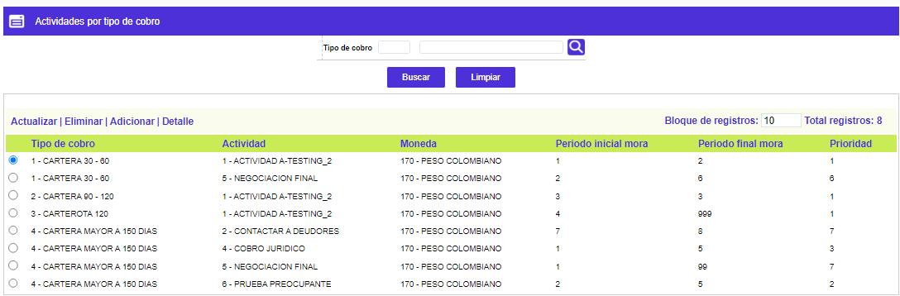
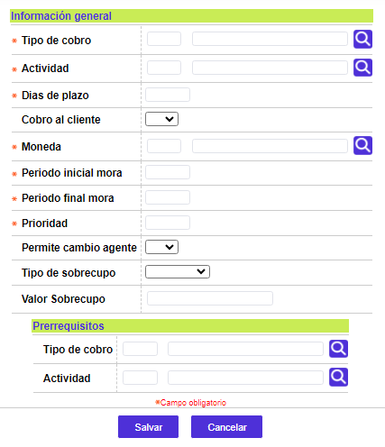
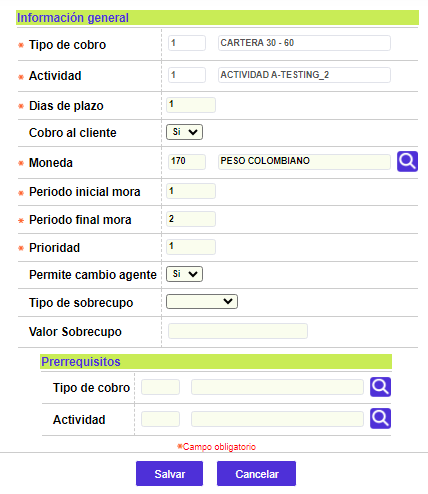
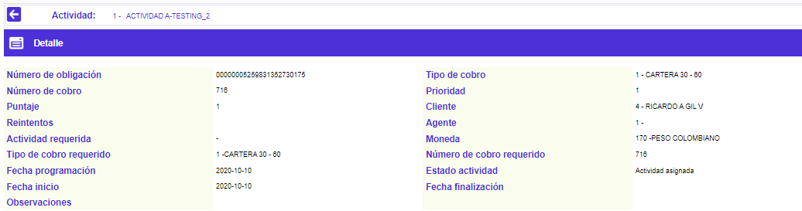

Actividades por tipo de cobro
A través de esta forma o función se relacionan tanto el código de la obligación como el tipo de cobro con las actividades de la gestión de cobranza; adicionalmente, para cada una de las actividades se permite parametrizar el plazo en días, o si genera o no un monto a cobrar por la actividad realizada del deudor. Mediante el uso del mouse o ratón, es posible ubicarse en el campo de prerrequisito para determinar que tipo de cobro y cuáles actividades deben ser finalizadas previamente a la actividad en que esté ubicado el cursor.
Filtro: El formulario cuenta con un filtro inicial de búsqueda, necesario para la consulta de la información:
|
Tipo de cobro |
Campo con lista de valores de la cual debe seleccionarse la clase de cobro a filtrar. |
El formulario contiene los enlaces: Actualizar,Eliminar, Adicionar y Detalle.

Adicionar: Si el usuario invoca la opción Adicionar se despliega un formulario con los siguientes campos:

|
Tipo de cobro |
Campo con lista de valores de la cual debe seleccionarse la clase de cobro a adelantar. |
|
Actividad |
Este campo cuenta con lista de valores poblada a través de la opción Actividades de cobro de este mismo menú, de la cual deben seleccionarse las acciones o pasos que deben adelantarse acorde tanto con el tipo de cobro como con el tipo de obligación seleccionados. |
|
Días de plazo |
Campo numérico de 3 dígitos, obligatorio, que contiene la cantidad de días hábiles de que dispone el personal de cobranza para realizar cada una de las actividades parametrizadas. |
|
Cobro al cliente |
Campo con lista de valores poblada a través de la opción Tipos de cobro de este mismo módulo, de la cual debe seleccionarse la clase de cobro que corresponde a la actividad que es señalada como prerrequisito de otra. |
|
Moneda |
Campo con lista de valores de la que debe seleccionarse el código de la Moneda del grupo de Tablas en la cual deben estar expresados los saldos de la obligación, para que apliquen los restantes parámetros aquí definidos. |
|
Periodo inicial mora |
Campo numérico de 3 dígitos, obligatorio, en la que se registra el Periodo del rango referido a la altura de mora presentado por las obligaciones que se están parametrizando. |
|
Meriodo final mora |
en este campo numérico de 3 dígitos, obligatorio, se indica el periodo del rango referido a la altura de mora presentado por las obligaciones que se están parametrizando. |
|
Prioridad |
En este campo numérico de 3 dígitos, obligatorio, se asigna el número que permite ordenar las obligaciones, por orden de importancia, siendo 1 el de mayor valor, y de esa forma asignarlas a los agentes de cobro. |
|
Permite cambio agente |
Campo que posee lista de valores adjunta de la que debe seleccionarse entre Si o No se permite cambiar de agente de cobro una vez asignada la obligación. |
|
Tipo de sobrecupo |
Este campo con lista de valores para escoger entre Valor y Porcentaje, no obligatorio. De este campo depende lo aceptado en el Valor del sobrecupo. |
|
Valor sobrecupo |
Sí el Tipo de sobrecupo es VALOR, se muestra un campo numérico de 14 dígitos más 2 decimales, corresponde al valor de sobrecupo presentado por el cliente, a partir del cual se inicia el tipo de cobro. La acción de iniciar gestión de cobro por mora prima sobre el cobro por sobrecupo. Sí el Tipo de sobrecupo es PORCENTAJE, se muestra un campo numérico de 3 dígitos más 2 decimales. |
|
Tipo de cobro |
Campo con lista de valores poblada a través de la opción Tipos de cobro de este mismo menú, de la cual debe seleccionarse la clase de cobro que corresponde a la actividad que es señalada como prerrequisito de otra. |
|
Actividad |
Este campo cuenta con lista de valores poblada a través de la opción Actividades de cobro de este mismo módulo, de la cual debe seleccionarse aquella que se constituye en prerrequisito de la actividad del bloque anterior sobre la que se encuentra ubicado el cursor. |
Actualizar: Si el usuario invoca la opción Actualizar se despliega un formulario en cual los únicos campos modificables son los siguientes:

Detalle: Si el usuario invoca la opción Detalle se despliega el siguiente formulario.
